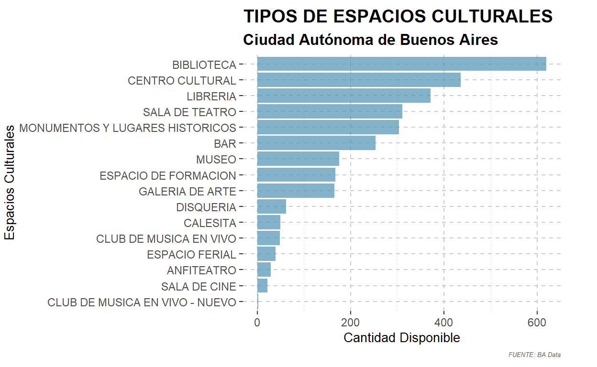
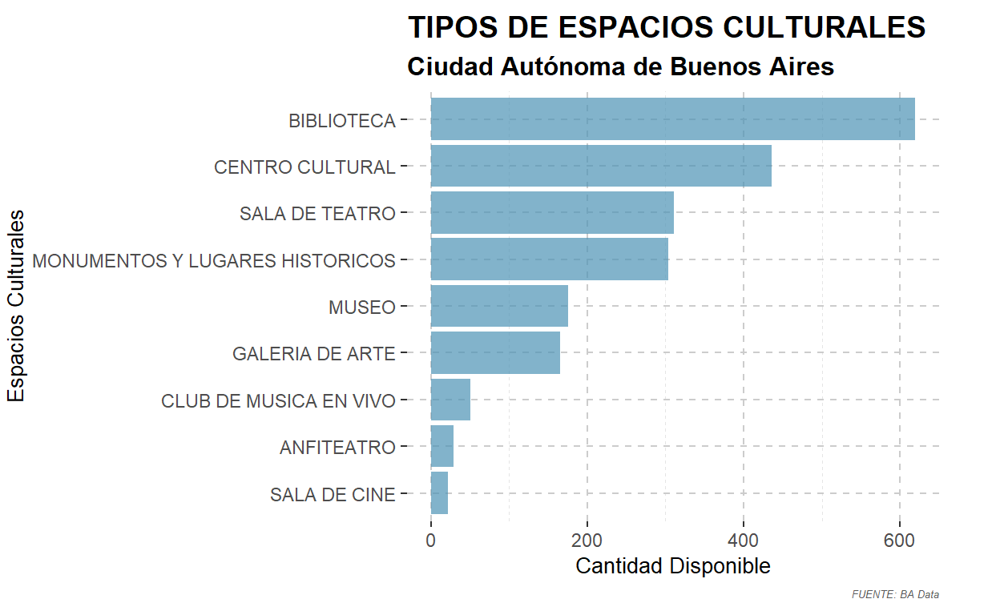
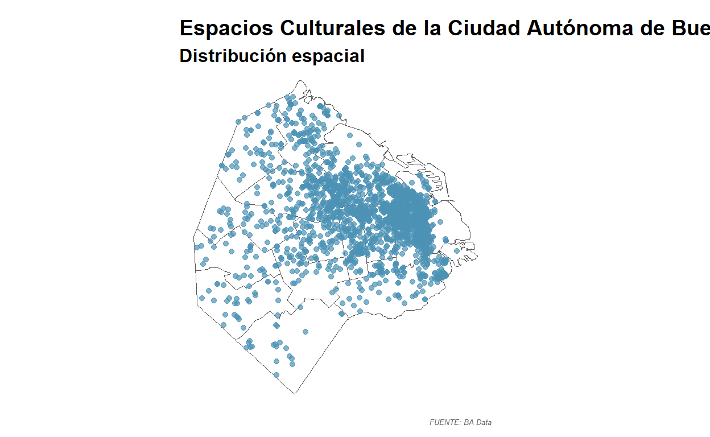
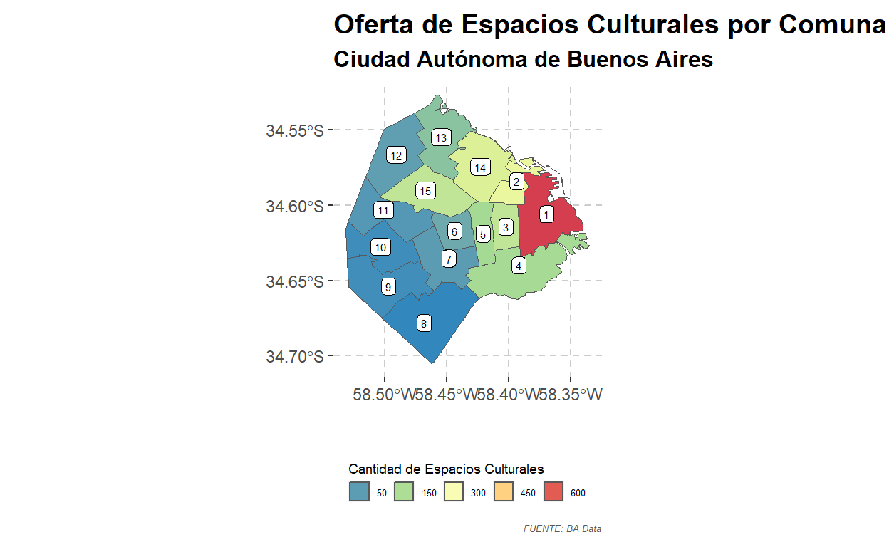
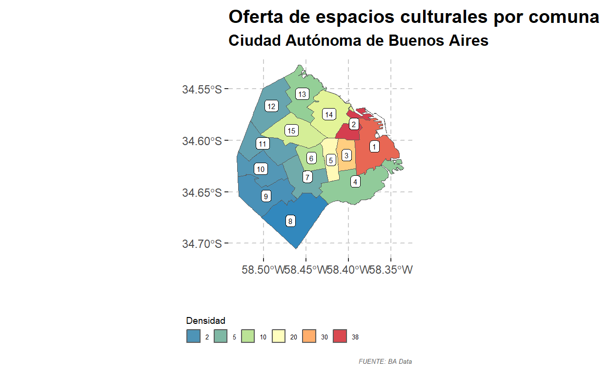
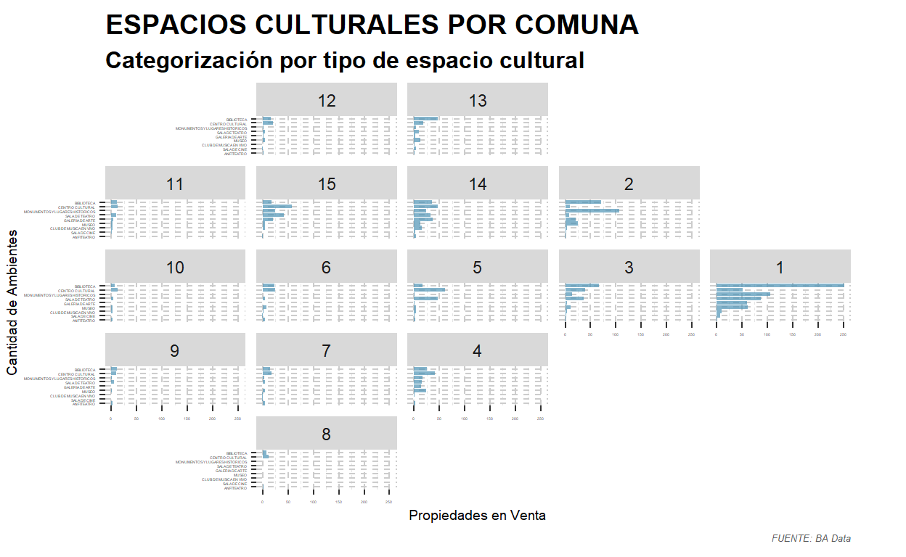

Instrumentos de Análisis Urbanos II - MEU 2023
Uno de los aspectos más notables de la Ciudad Autónoma de Buenos Aires es su herencia cultural. Su riqueza histórica, diversidad artística, músicos, escritores y arquitectura, no dejan de sorprender a quienes la recorren y visitan. El presente trabajo práctico se propone estudiar la distribución espacial de los Espacios Culturales de la ciudad; aquellos sitios destinados a la congregación de personas para realizar lecturas, visitar exposiciones, asistir a espectáculos o shows musicales, acudir a actividades teatrales o muestras audiovisuales.
Para comenzar se procede a instalar todas las librerías necesarias para el estudio.
Consiste en un listado de espacios culturales públicos, privados e independientes localizados en la Ciudad de Buenos Aires, como por ejemplo: bares, bibliotecas, calesitas, centros culturales, monumentos y lugares históricos, disquerías, espacios de exhibición, espacios de formación, espacios escénicos, espacios feriales, librerías y salas de cine.
# A tibble: 3,053 × 30
fid FUNCION_PRINCIPAL SUBCATEGORIA ESTABLECIMIENTO
<dbl> <chr> <chr> <chr>
1 1 ANFITEATRO <NA> ALEMANIA
2 2 ANFITEATRO <NA> ALLENDE, SALVADOR
3 3 ANFITEATRO <NA> ANFITEATRO ESCALINATA
4 4 ANFITEATRO <NA> ANFITEATRO EVA PERON
5 5 ANFITEATRO <NA> ANFITEATRO VILLA CILDAÑEZ
6 6 ANFITEATRO <NA> ÁNGEL GRIS
7 7 ANFITEATRO <NA> CIUDAD DE UDINE
8 8 ANFITEATRO <NA> CORTAZAR, JULIO
9 9 ANFITEATRO <NA> DE LOS COLEGIALES
10 10 ANFITEATRO <NA> DEL CABALLITO
# ℹ 3,043 more rows
# ℹ 26 more variables: FUNCION_SECUNDARIA <chr>, PROGRAMACION <chr>,
# SUCURSAL <chr>, SALA <chr>, CALLE <chr>, ALTURA <dbl>,
# BARRIO <chr>, COMUNA <chr>, DIRECCION <chr>, LONGITUD <dbl>,
# LATITUD <dbl>, TELEFONO <chr>, MAIL <chr>, WEB <chr>,
# ...19 <dbl>, FACEBOOK <chr>, TWITTER <chr>, INSTAGRAM <chr>,
# CAMARA_1 <chr>, CAMARA_2 <chr>, REDES <chr>, …Contiene la información geográfica de las Comunas de la Ciudad Autónoma de Buenos Aires, según lo estipulado por la Ley Orgánica de Comunas (Ley Nº 1777/2005).
options: ENCODING=UTF-8
Reading layer `comunas_wgs84' from data source
`C:\Users\Usuario\Desktop\TP_Final\data\comunas_wgs84.shp'
using driver `ESRI Shapefile'
Simple feature collection with 15 features and 6 fields
Geometry type: MULTIPOLYGON
Dimension: XY
Bounding box: xmin: -58.53152 ymin: -34.70529 xmax: -58.33515 ymax: -34.52649
Geodetic CRS: WGS 84| Name | datos_EC |
| Number of rows | 3053 |
| Number of columns | 30 |
| _______________________ | |
| Column type frequency: | |
| character | 23 |
| numeric | 7 |
| ________________________ | |
| Group variables | None |
Variable type: character
| skim_variable | n_missing | complete_rate | min | max | empty | n_unique | whitespace |
|---|---|---|---|---|---|---|---|
| FUNCION_PRINCIPAL | 0 | 1.00 | 3 | 31 | 0 | 16 | 0 |
| SUBCATEGORIA | 1724 | 0.44 | 4 | 36 | 0 | 25 | 0 |
| ESTABLECIMIENTO | 0 | 1.00 | 3 | 194 | 0 | 2930 | 0 |
| FUNCION_SECUNDARIA | 2693 | 0.12 | 3 | 69 | 0 | 57 | 0 |
| PROGRAMACION | 2769 | 0.09 | 2 | 2 | 0 | 1 | 0 |
| SUCURSAL | 2930 | 0.04 | 2 | 61 | 0 | 89 | 0 |
| SALA | 3009 | 0.01 | 1 | 40 | 0 | 41 | 0 |
| CALLE | 0 | 1.00 | 4 | 90 | 0 | 848 | 0 |
| BARRIO | 1 | 1.00 | 4 | 17 | 0 | 48 | 0 |
| COMUNA | 0 | 1.00 | 8 | 9 | 0 | 16 | 0 |
| DIRECCION | 0 | 1.00 | 6 | 96 | 0 | 2658 | 0 |
| TELEFONO | 1030 | 0.66 | 7 | 86 | 0 | 1985 | 0 |
| 1270 | 0.58 | 1 | 140 | 0 | 1739 | 0 | |
| WEB | 1474 | 0.52 | 1 | 171 | 0 | 1401 | 0 |
| 2208 | 0.28 | 1 | 512 | 0 | 784 | 0 | |
| 2896 | 0.05 | 6 | 151 | 0 | 151 | 0 | |
| 2536 | 0.17 | 9 | 113 | 0 | 448 | 0 | |
| CAMARA_1 | 2393 | 0.22 | 3 | 24 | 0 | 35 | 0 |
| CAMARA_2 | 3004 | 0.02 | 4 | 22 | 0 | 17 | 0 |
| REDES | 3025 | 0.01 | 5 | 76 | 0 | 16 | 0 |
| PUNTO_DE_CULTURA | 3038 | 0.00 | 2 | 22 | 0 | 2 | 0 |
| OTRAS_REDES | 3047 | 0.00 | 6 | 36 | 0 | 6 | 0 |
| TAG | 2684 | 0.12 | 5 | 103 | 0 | 80 | 0 |
Variable type: numeric
| skim_variable | n_missing | complete_rate | mean | sd | p0 | p25 | p50 | p75 | p100 | hist |
|---|---|---|---|---|---|---|---|---|---|---|
| fid | 0 | 1.00 | 1527.00 | 881.47 | 1.00 | 764.00 | 1527.0 | 2290.00 | 3053.00 | ▇▇▇▇▇ |
| ALTURA | 136 | 0.96 | 1823.86 | 1578.82 | 1.00 | 645.00 | 1385.0 | 2455.00 | 9810.00 | ▇▂▁▁▁ |
| LONGITUD | 21 | 0.99 | -58.41 | 0.04 | -58.53 | -58.44 | -58.4 | -58.38 | -58.35 | ▁▂▅▇▆ |
| LATITUD | 22 | 0.99 | -34.60 | 0.02 | -34.69 | -34.62 | -34.6 | -34.59 | -34.54 | ▁▂▇▅▁ |
| …19 | 3025 | 0.01 | 641.07 | 640.03 | 0.00 | 100.00 | 500.0 | 900.00 | 2400.00 | ▇▆▁▂▁ |
| CANTIDAD_SALAS | 2627 | 0.14 | 1.27 | 1.51 | 0.00 | 1.00 | 1.0 | 1.00 | 12.00 | ▇▁▁▁▁ |
| CAPACIDAD_TOTAL | 287 | 0.91 | 53.60 | 494.14 | 0.00 | 0.00 | 0.0 | 0.00 | 15000.00 | ▇▁▁▁▁ |
fid FUNCION_PRINCIPAL SUBCATEGORIA
Min. : 1 Length:3053 Length:3053
1st Qu.: 764 Class :character Class :character
Median :1527 Mode :character Mode :character
Mean :1527
3rd Qu.:2290
Max. :3053
ESTABLECIMIENTO FUNCION_SECUNDARIA PROGRAMACION
Length:3053 Length:3053 Length:3053
Class :character Class :character Class :character
Mode :character Mode :character Mode :character
SUCURSAL SALA CALLE
Length:3053 Length:3053 Length:3053
Class :character Class :character Class :character
Mode :character Mode :character Mode :character
ALTURA BARRIO COMUNA
Min. : 1 Length:3053 Length:3053
1st Qu.: 645 Class :character Class :character
Median :1385 Mode :character Mode :character
Mean :1824
3rd Qu.:2455
Max. :9810
NA's :136
DIRECCION LONGITUD LATITUD
Length:3053 Min. :-58.53 Min. :-34.69
Class :character 1st Qu.:-58.44 1st Qu.:-34.62
Mode :character Median :-58.40 Median :-34.60
Mean :-58.41 Mean :-34.60
3rd Qu.:-58.38 3rd Qu.:-34.59
Max. :-58.35 Max. :-34.54
NA's :21 NA's :22
TELEFONO MAIL WEB
Length:3053 Length:3053 Length:3053
Class :character Class :character Class :character
Mode :character Mode :character Mode :character
...19 FACEBOOK TWITTER
Min. : 0.0 Length:3053 Length:3053
1st Qu.: 100.0 Class :character Class :character
Median : 500.0 Mode :character Mode :character
Mean : 641.1
3rd Qu.: 900.0
Max. :2400.0
NA's :3025
INSTAGRAM CAMARA_1 CAMARA_2
Length:3053 Length:3053 Length:3053
Class :character Class :character Class :character
Mode :character Mode :character Mode :character
REDES PUNTO_DE_CULTURA OTRAS_REDES
Length:3053 Length:3053 Length:3053
Class :character Class :character Class :character
Mode :character Mode :character Mode :character
CANTIDAD_SALAS CAPACIDAD_TOTAL TAG
Min. : 0.000 Min. : 0.0 Length:3053
1st Qu.: 1.000 1st Qu.: 0.0 Class :character
Median : 1.000 Median : 0.0 Mode :character
Mean : 1.265 Mean : 53.6
3rd Qu.: 1.000 3rd Qu.: 0.0
Max. :12.000 Max. :15000.0
NA's :2627 NA's :287 Al indagar en la base de datos de los Espacios Culturales de CABA, es posible realizar las siguientes observaciones:
El estudio de la distribución geográfica de los espacios culturales puede prescindir de ciertas columnas de la base de datos, conservando únicamente 6 variables: Función principal - Establecimiento - Capacidad total - Comuna - Latitud - Longitud.
# A tibble: 3,053 × 6
FUNCION_PRINCIPAL ESTABLECIMIENTO CAPACIDAD_TOTAL COMUNA LATITUD
<chr> <chr> <dbl> <chr> <dbl>
1 ANFITEATRO ALEMANIA NA COMUN… -34.6
2 ANFITEATRO ALLENDE, SALVADOR NA COMUN… -34.6
3 ANFITEATRO ANFITEATRO ESCALI… NA COMUN… -34.7
4 ANFITEATRO ANFITEATRO EVA PE… 0 COMUN… -34.6
5 ANFITEATRO ANFITEATRO VILLA … NA COMUN… -34.7
6 ANFITEATRO ÁNGEL GRIS NA COMUN… -34.6
7 ANFITEATRO CIUDAD DE UDINE NA COMUN… -34.6
8 ANFITEATRO CORTAZAR, JULIO NA COMUN… -34.6
9 ANFITEATRO DE LOS COLEGIALES NA COMUN… -34.6
10 ANFITEATRO DEL CABALLITO NA COMUN… -34.6
# ℹ 3,043 more rows
# ℹ 1 more variable: LONGITUD <dbl>
Una vez acotado el universo de estudio, al efectuar un primer gráfico de aproximación rápida a la información, se evidencia la superioridad numérica de las bibliotecas (más de 600 establecimientos); seguidas por centros culturales, librerías, salas de teatro, monumentos y lugares históricos con más de 300 localidades; continuando por bares, museos, espacios de formación, galerías de arte y disquerías con más de 100 opciones; y demás espacios que no superan las 50 instalaciones por categoría.
Si bien la oferta es variada y extensa, parte de estas actividades no son puramente culturales. Puesto que el objetivo de esta investigación es estudiar la distribución de aquellos espacios que promueven la cultura en la ciudad, se procede a conservar sólo los sitios destinados a la congregación de personas para la lectura, exposiciones, espectáculos, shows musicales, actividades teatrales y muestras audiovisuales. Por consiguiente, se han descartado ofertas más comerciales como los bares, disquerías, librerías y espacios feriales; alternativas recreativas como las calesitas; y los espacios de formación en donde se superpone lo cultural con lo educativo.
# A tibble: 2,112 × 6
FUNCION_PRINCIPAL ESTABLECIMIENTO CAPACIDAD_TOTAL COMUNA LATITUD
<chr> <chr> <dbl> <chr> <dbl>
1 ANFITEATRO ALEMANIA NA COMUN… -34.6
2 ANFITEATRO ALLENDE, SALVADOR NA COMUN… -34.6
3 ANFITEATRO ANFITEATRO ESCALI… NA COMUN… -34.7
4 ANFITEATRO ANFITEATRO EVA PE… 0 COMUN… -34.6
5 ANFITEATRO ANFITEATRO VILLA … NA COMUN… -34.7
6 ANFITEATRO ÁNGEL GRIS NA COMUN… -34.6
7 ANFITEATRO CIUDAD DE UDINE NA COMUN… -34.6
8 ANFITEATRO CORTAZAR, JULIO NA COMUN… -34.6
9 ANFITEATRO DE LOS COLEGIALES NA COMUN… -34.6
10 ANFITEATRO DEL CABALLITO NA COMUN… -34.6
# ℹ 2,102 more rows
# ℹ 1 more variable: LONGITUD <dbl>
Esta análisis cuantitativo sobre la oferta de espacios culturales en la ciudad, puede enriquecerse al incorporar la variable espacial, con el objetivo de visualizar dónde se implanta cada uno. A tal efecto, se transforma el dataframe de espacios culturales en un objeto espacial sf, y se realiza un gráfico que superpone dicha distribución con la geografía de las comunas.
Simple feature collection with 2111 features and 6 fields
Geometry type: POINT
Dimension: XY
Bounding box: xmin: -58.52924 ymin: -34.6943 xmax: -58.34907 ymax: -34.53574
Geodetic CRS: WGS 84
# A tibble: 2,111 × 7
FUNCION_PRINCIPAL ESTABLECIMIENTO CAPACIDAD_TOTAL COMUNA
* <chr> <chr> <dbl> <chr>
1 ANFITEATRO ALEMANIA NA COMUNA…
2 ANFITEATRO ALLENDE, SALVADOR NA COMUNA…
3 ANFITEATRO ANFITEATRO ESCALINATA NA COMUNA…
4 ANFITEATRO ANFITEATRO EVA PERON 0 COMUNA…
5 ANFITEATRO ANFITEATRO VILLA CILDAÑEZ NA COMUNA…
6 ANFITEATRO ÁNGEL GRIS NA COMUNA…
7 ANFITEATRO CIUDAD DE UDINE NA COMUNA…
8 ANFITEATRO CORTAZAR, JULIO NA COMUNA…
9 ANFITEATRO DE LOS COLEGIALES NA COMUNA…
10 ANFITEATRO DEL CABALLITO NA COMUNA…
# ℹ 2,101 more rows
# ℹ 3 more variables: geometry <POINT [°]>, lat <dbl>, lon <dbl>
Rápidamente observamos que la mayor cantidad de puntos (espacios culturales) se concentran en las comunas 1, 2, 3, 5, 14 y 15. A su vez, la forma en que se encuentran concentrados, sugiere que su implantación sucede en torno a avenidas o trazados viales de relevancia para la ciudad.
Para corroborar esta percepción, se procede a conformar un mapa coroplético que otorgue un valor cromático a las comunas según la cantidad de espacios culturales que poseen. Para ello, es necesario complementar la información de las comunas con la de los espacios culturales, uniendo los dataframe “comunas” y “EC_recorte” de la siguiente manera.
Si bien ambas bases de datos (comunas | EC_recorte) cuentan con una columna que refiere al nombre de las comunas, las mismas presentan diferencias en el nombre de la columna (COMUNAS | COMUNA) y en el contenido de sus filas (1 | COMUNA 1). De igual modo, la información de espacios culturales contiene una notación extra denominada “COMUNA NA” que debe ser removida previamente.
[1] 2 6 10 11 12 14 15 13 4 5 7 3 9 8 1 [1] "COMUNA 14" "COMUNA 12" "COMUNA 8" "COMUNA 6" "COMUNA 9"
[6] "COMUNA 7" "COMUNA 10" "COMUNA 13" "COMUNA 15" "COMUNA 1"
[11] "COMUNA 3" "COMUNA 4" "COMUNA 5" "COMUNA 2" "COMUNA 11"
[16] "COMUNA NA"Se procede a modificar la base de datos ‘EC_recorte’: eliminando la notación “COMUNA NA”, agrupando la información por comuna, determinando la cantidad de espacios culturales por comuna, conservando sólo los números que identifican a las comunas y transformando dicha variable en números.
# A tibble: 15 × 2
COMUNA CANTIDAD
<dbl> <int>
1 1 636
2 10 28
3 11 43
4 12 53
5 13 100
6 14 211
7 15 174
8 2 245
9 3 176
10 4 141
11 5 139
12 6 66
13 7 49
14 8 21
15 9 29De igual modo se trabaja sobre los datos ‘comunas’: renombrando la columna “COMUNAS” como “COMUNA”, y conservando únicamente la información correspondiente a ‘COMUNA’, ‘AREA’ y ‘geometry’.
Simple feature collection with 15 features and 2 fields
Geometry type: MULTIPOLYGON
Dimension: XY
Bounding box: xmin: -58.53152 ymin: -34.70529 xmax: -58.33515 ymax: -34.52649
Geodetic CRS: WGS 84
First 10 features:
COMUNA AREA geometry
1 2 6317265 MULTIPOLYGON (((-58.38 -34....
2 6 6851029 MULTIPOLYGON (((-58.43061 -...
3 10 12656557 MULTIPOLYGON (((-58.48834 -...
4 11 14120042 MULTIPOLYGON (((-58.49838 -...
5 12 15570927 MULTIPOLYGON (((-58.50331 -...
6 14 15845871 MULTIPOLYGON (((-58.42676 -...
7 15 14322897 MULTIPOLYGON (((-58.42602 -...
8 13 14713213 MULTIPOLYGON (((-58.44033 -...
9 4 21684645 MULTIPOLYGON (((-58.38864 -...
10 5 6660603 MULTIPOLYGON (((-58.43333 -...En este punto ya estamos en condiciones de unir ambos dataframe en “EC_comunas”, obteniendo información sobre la cantidad de espacios culturales que contiene cada comuna, junto al área y la base geográfica de dichas jurisdicciones.
Simple feature collection with 15 features and 3 fields
Geometry type: MULTIPOLYGON
Dimension: XY
Bounding box: xmin: -58.53152 ymin: -34.70529 xmax: -58.33515 ymax: -34.52649
Geodetic CRS: WGS 84
First 10 features:
COMUNA AREA CANTIDAD geometry
1 2 6317265 245 MULTIPOLYGON (((-58.38 -34....
2 6 6851029 66 MULTIPOLYGON (((-58.43061 -...
3 10 12656557 28 MULTIPOLYGON (((-58.48834 -...
4 11 14120042 43 MULTIPOLYGON (((-58.49838 -...
5 12 15570927 53 MULTIPOLYGON (((-58.50331 -...
6 14 15845871 211 MULTIPOLYGON (((-58.42676 -...
7 15 14322897 174 MULTIPOLYGON (((-58.42602 -...
8 13 14713213 100 MULTIPOLYGON (((-58.44033 -...
9 4 21684645 141 MULTIPOLYGON (((-58.38864 -...
10 5 6660603 139 MULTIPOLYGON (((-58.43333 -...Nota: cabe mencionar que este proceso de limpieza y transformación previa de los datos para lograr su unificación ha sido una de las situaciones más problemáticas del estudio; fundamentalmente cuando se intentaba remover las notaciones “COMUNA” que antecedían a los números de cada comuna en el dataframe “EC_recorte”

Este mapa coroplético asigna un color a las comunas según la cantidad de espacios culturales que poseen. De este modo, se evidencian más de 600 establecimientos en la Comuna 1; seguida por las Comunas 2, 14, 15, 3, 4, 5 y 13 con entre 150 y 300 sitios; culminando con aquellas más periféricas que cuentan con menos de 100 lugares.
No obstante, la superficie de las comunas puede generar ciertas distorsiones en los resultados, siendo conveniente realizar comparaciones según la densidad de espacios disponibles (cantidad de espacios culturales / área de las comunas).

De esta manera, es posible comprender que la comuna 2 es la que presenta más oferta (superando el 30%); seguida por las comunas 1, 3 y 5, 14 y 15 con entre un 20% y 30%; las 6, 4 y 13 con entre un 10% y 20%; y las jurisdicciones periféricas con menos del 5%.
Para culminar con el estudio, no sólo es importante detectar cuál es la comuna con mayor disponibilidad de espacios culturales, sino también comprender de qué esta compuesta dicha oferta y cómo se distribuyen estos usos en el territorio. Con este fin se ha recurrido al paquete ‘geoAr’, importando la grilla de la Ciudad Autónoma de Buenos Aires, para luego, mediante un tratamiento de los datos correspondientes a los espacios culturales, obtener un mapa facetado que represente dicha información deseada:
Se procede a importar la grilla espacial de CABA, renombrando la columna “name” por “name_COMUNA”, conservando sólo los números que identifican a cada comuna y eliminando los 0 que les preceden.
name_provincia name_COMUNA row col code
1 CABA 13 1 3 013
2 CABA 12 1 2 012
3 CABA 11 2 1 011
4 CABA 14 2 3 014
5 CABA 15 2 2 015
6 CABA 2 2 4 002
7 CABA 6 3 2 006
8 CABA 10 3 1 010
9 CABA 5 3 3 005
10 CABA 3 3 4 003
11 CABA 7 4 2 007
12 CABA 9 4 1 009
13 CABA 1 3 5 001
14 CABA 4 4 3 004
15 CABA 8 5 2 008De igual modo se trabaja sobre el dataframe “EC_recorte”: renombrando la columna “COMUNA” como “name_COMUNA”, eliminando la notación “COMUNA NA”, agrupando la información por el tipo de espacio cultural y las comunas, determinando la cantidad de espacios culturales por comuna, conservando sólo los números que identifican a las comunas y transformando dicha variable en números.
# A tibble: 115 × 3
# Groups: FUNCION_PRINCIPAL [9]
FUNCION_PRINCIPAL name_COMUNA CANTIDAD
<chr> <dbl> <int>
1 ANFITEATRO 1 1
2 ANFITEATRO 10 2
3 ANFITEATRO 12 2
4 ANFITEATRO 13 1
5 ANFITEATRO 14 4
6 ANFITEATRO 15 1
7 ANFITEATRO 2 1
8 ANFITEATRO 3 1
9 ANFITEATRO 4 2
10 ANFITEATRO 5 2
# ℹ 105 more rows
Este mapa facetado expone rápidamente que la mayor diversidad de espacios culturales se encuentra en las comunas 1, 2, 3, 13 y 14; seguidas por las comunas 4, 15, 6, 7 y 12; y muy por debajo por las 11, 10, 9 y 8. Asimismo, si analizamos los datos con más detalle, observamos que:
A lo largo de todo el estudio se ha verificado y reforzado la idea sobre que la Ciudad de Buenos Aires cuenta con una oferta cultural numerosa y diversificada a lo largo de todo su territorio. No obstante, es preciso mencionar que su distribución no es homogénea. Gran parte de esta diversidad se concentra en las áreas centrales debido a sus condiciones urbanas, carácter histórico y grados de consolidación; mientras que en el sur y la periferia, los espacios culturales se reducen considerablemente. De igual modo, sería interesante continuar este análisis e indagar sobre cómo es la afluencia de público hacia estos lugares: qué tipo de personas acuden a ellos, con qué frecuencia lo hacen, qué cantidad de usuarios reciben a diario estos espacios.